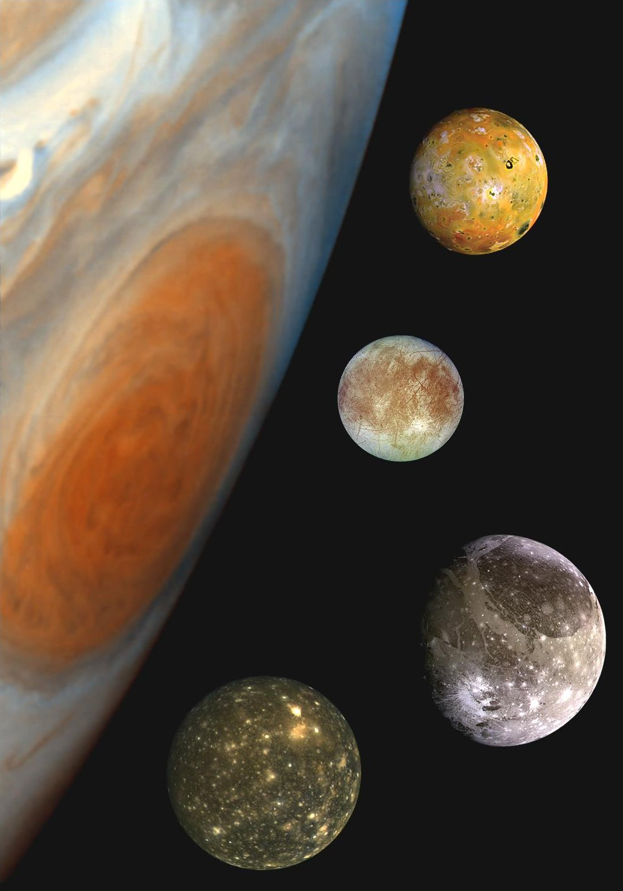

동기 유발
1월의 태양이 7월보다 큰 까닭
교과서 p. 22학습 목표
- 태양계를 지배하는 힘이 태양의 중력임을 설명할 수 있다.
- 케플러의 세 가지 법칙을 이용하여 태양계 천체의 운동을 설명할 수 있다.
자체 제작
자체 제작 (실제 이심률로 작도)
북반구가 겨울인 1월에 지구는 태양에 가장 가깝다. 그렇다면 1월의 지구는 7월보다 더 빨리 움직일까, 더 느리게 움직일까?
시지름 비 32.5/31.5 ≈ 1.03 → 거리 비 약 3%. 계절은 거리 때문이 아니라 자전축 기울기 때문임을 짚고, '거리가 바뀌면 속력도 바뀐다'는 질문으로 제2법칙에 연결합니다. 운영안 4차시(만유인력·제1법칙 1 / 제2·3법칙 1 / 탐구 2).
핵심 개념 1
태양계를 지배하는 힘
교과서 p. 22(1) 만유인력과 태양의 중력
- 만유인력 법칙: 질량을 가진 두 물체는 서로 끌어당기며, 그 힘은 두 질량의 곱에 비례하고 거리의 제곱에 반비례한다.
- 태양은 태양계 전체 질량의 약 99.86%를 차지한다. 따라서 태양계 천체의 운동은 대부분 태양의 중력으로 결정된다.
- 뉴턴은 만유인력 법칙으로 케플러 법칙을 이론적으로 증명하여, 중력이 태양계를 지배하는 힘임을 밝혔다.
F = G M mr² G = 6.67 × 10⁻¹¹ N·m²/kg² (만유인력 상수)
핵심 개념 2
타원 궤도 법칙과 면적 속도 일정 법칙
교과서 p. 23 ~ 24(1) 케플러 제1법칙 · 타원 궤도 법칙
- 행성은 태양을 한 초점으로 하는 타원 궤도를 따라 공전한다.
- 근일점: 태양에 가장 가까운 점, 원일점: 가장 먼 점. 근일점과 원일점 거리의 평균이 긴반지름(a)이다.
- 이심률(e): 타원이 납작한 정도. 0이면 원, 1에 가까울수록 납작하다.
e = ca , 근일점 거리 = a(1 − e), 원일점 거리 = a(1 + e) c: 타원 중심에서 초점까지 거리
| 천체 | 수성 | 금성 | 지구 | 화성 | 목성 | 명왕성 | 핼리 혜성 |
|---|---|---|---|---|---|---|---|
| 이심률 | 0.206 | 0.007 | 0.017 | 0.093 | 0.049 | 0.249 | 0.967 |
(2) 케플러 제2법칙 · 면적 속도 일정 법칙
- 행성과 태양을 이은 선분은 같은 시간 동안 같은 면적을 쓸고 지나간다.
- 따라서 행성은 근일점에서 가장 빠르고, 원일점에서 가장 느리다. → 지구는 1월에 7월보다 빠르다.
- 근일점·원일점에서 속력 비는 거리 비의 역수이다(각운동량 보존).
v근v원 = r원r근 = 1 + e1 − e
시뮬레이션 1케플러 궤도 실험실: 같은 시간, 같은 면적
색칠된 부채꼴은 모두 같은 시간(공전 주기 ÷ 등분 수) 동안 쓸고 간 넓이이다. 모양은 달라도 넓이가 같은지 오른쪽 숫자로 확인하자. 긴반지름을 바꾸면 공전 주기가 어떻게 변하는지도 보자(제3법칙).
핵심 개념 3
조화 법칙과 질량 중심
교과서 p. 24 ~ 25(1) 케플러 제3법칙 · 조화 법칙
- 행성의 공전 주기(P)의 제곱은 궤도 긴반지름(a)의 세제곱에 비례한다.
- P를 년, a를 AU 단위로 쓰면 태양계 천체에 대해 비례 상수가 1이 된다.
- 뉴턴은 이 비례 상수가 중심 천체의 질량에 따라 정해짐을 보였다. → 위성·행성·쌍성의 공전을 관측하면 중심 천체의 질량을 구할 수 있다.
P² = a³ (년, AU) ⟸ P² = 4π²G(M + m) a³ 태양 질량 M에 비해 행성 질량 m은 매우 작아 무시할 수 있다.
| 행성 | a (AU) | P (년) | a³ | P² |
|---|---|---|---|---|
| 수성 | 0.387 | 0.241 | 0.058 | 0.058 |
| 지구 | 1.000 | 1.000 | 1.000 | 1.000 |
| 화성 | 1.524 | 1.881 | 3.54 | 3.54 |
| 목성 | 5.203 | 11.86 | 140.8 | 140.7 |
| 해왕성 | 30.07 | 164.8 | 27190 | 27160 |
(2) 질량 중심 · 태양도 움직인다
- 엄밀하게는 태양과 행성이 공통 질량 중심을 함께 돈다. 질량 중심은 무거운 천체 쪽에 가깝다.
- 태양–목성의 질량 중심은 태양 중심에서 약 74만 km(태양 반지름의 약 1.07배)로, 태양 표면 바로 바깥에 있다. 그래서 태양은 약 12년 주기로 작게 흔들린다.
- 이 흔들림을 멀리서 관측하면 보이지 않는 행성의 존재를 알아낼 수 있다 → 외계 행성 탐사(I-05)
M a1 = m a2 , a = a1 + a2 a₁, a₂: 각 천체에서 질량 중심까지의 거리
시뮬레이션 2두 천체는 함께 춤춘다: 질량 중심 공전
십자 표시가 공통 질량 중심이다. 질량비가 커질수록 질량 중심이 무거운 천체 쪽으로 다가가 큰 천체는 거의 제자리에서 작게 흔들린다. 오른쪽 그래프는 큰 천체의 시선 방향 속도 변화(외계 행성 탐사의 원리)이다.
데이터 탐구
JPL 궤도 데이터로 케플러 제3법칙을 검증하고 행성의 질량 재기
탐구 개요
NASA JPL이 공개하는 실제 궤도 요소로 'P ∝ a1.5'가 정말 성립하는지 회귀 분석으로 확인한다. 이어서 같은 방법을 목성의 위성과 지구의 위성(달·인공위성)에 적용하여, 저울 없이 목성과 지구의 질량을 구해 본다.

NASA/JPL/DLR, 퍼블릭 도메인
그래프 그리기a와 P를 그대로 그리면 곡선이지만, 양쪽에 로그를 취하면 직선이 된다. 왜 그럴까? log P = 1.5 log a + 상수
회귀 직선 구하기중심 천체를 고르고 회귀선의 기울기와 결정 계수(r²)를 확인한다. 기울기가 1.5에 가까운가?
중심 천체의 질량뉴턴의 식 M = 4π²a³ / (G P²)로 각 천체에서 질량을 구해 평균을 낸다.
예측a만 알려진 가상 천체의 공전 주기를 회귀식으로 예측해 본다.
데이터 랩log a – log P 그래프와 회귀 분석
'로그 축'을 끄면 원래 눈금으로 볼 수 있다. 질량은 SI 단위(a: m, P: s, G = 6.674×10⁻¹¹)로 계산한다.
📋 데이터 표
분석 질문
1. 태양 주위 천체의 회귀선 기울기와 r²는? 이 값이 의미하는 것은?
기울기 ≈ 1.500, r² ≈ 1.0000. log P = 1.5 log a + c 이므로 P ∝ a1.5, 즉 P² ∝ a³이다. 행성뿐 아니라 왜소 행성·소행성·혜성까지 한 직선 위에 놓이므로 케플러 제3법칙은 태양 주위의 모든 천체에 성립한다.
2. 목성 주위와 지구 주위 자료의 회귀선은 태양 주위 직선과 어떻게 다른가? 그 까닭은?
세 직선의 기울기는 모두 1.5로 같지만 절편이 다르다. P² = 4π²a³/(GM)에서 절편이 중심 천체의 질량 M으로 정해지기 때문이다. 같은 a에서 중심 질량이 작을수록 공전 주기가 길다.
3. 데이터로 구한 목성과 지구의 질량은? 태양 질량의 몇 분의 1인가?
목성 ≈ 1.90×10²⁷ kg(태양의 약 1/1050), 지구 ≈ 6.0×10²⁴ kg(태양의 약 1/33만). 태양 ≈ 2.0×10³⁰ kg. 실제로 행성의 질량은 이렇게 위성의 공전을 관측해 구했다.
4. 심화 · 지구 주위 자료에서 '달' 하나만 쓰면 지구의 질량이 약간 크게 나온다. 왜 그럴까?
정확한 식은 P² = 4π²a³ / G(M + m)이다. 달의 질량은 지구의 약 1/81로 무시할 수 없을 만큼 커서, 계산값은 지구 + 달의 질량(약 1.2% 더 큼)이 된다. 인공위성은 질량이 매우 작아 지구 질량만 남는다.
파이썬으로 해 보기 (선택)
import numpy as np
a = np.array([0.387, 0.723, 1.0, 1.524, 5.203, 9.537, 19.19, 30.07]) # AU
P = np.array([0.241, 0.615, 1.0, 1.881, 11.86, 29.46, 84.01, 164.8]) # 년
m, c = np.polyfit(np.log10(a), np.log10(P), 1)
print("기울기", m, "절편", c) # 기울기 ≈ 1.5, 절편 ≈ 0
형성 평가
개념 확인 문제
그림·자료 출처
목성 위성 사진: NASA/JPL/DLR(퍼블릭 도메인). 궤도 자료: NASA JPL Solar System Dynamics(행성 궤도 요소, 위성 평균 궤도 요소) 공개 값을 반올림하여 사용. 모식도와 시뮬레이션은 직접 만들었습니다.